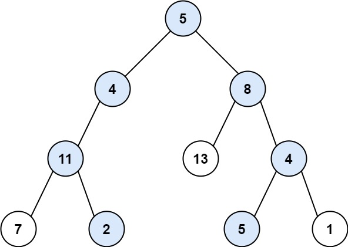

113. 路径总和 II
DFS 回溯：路径数组 + 剩余和 rest，到叶子且 rest 归零就把路径的拷贝记进答案，回溯时弹掉当前结点。
思路
dfs(node, rest)：结点先进path，rest减去它的值，再递归左右孩子。- 到叶子且
rest == 0：把path的拷贝记进答案；不拷贝的话回溯会把存进去的路径改掉。 - 左右递归完必须弹出
path最后一个元素，回到父结点时路径才正确——这就是回溯。 - 结点值可能是负数，
rest中途变小不能提前剪枝。
图解
最优解
1import java.util.*;2 3class Solution {4 private List<List<Integer>> ans = new ArrayList<>();5 private List<Integer> path = new ArrayList<>();6 7 public List<List<Integer>> pathSum(TreeNode root, int targetSum) {8 dfs(root, targetSum);9 return ans;10 }11 12 // 走到 node 时还差 rest 没凑13 private void dfs(TreeNode node, int rest) {14 if (node == null) return;15 // 选中当前结点：进路径，剩余和减去它的值16 path.add(node.val);17 rest -= node.val;18 // 到叶子且刚好凑够：把路径的拷贝记进答案19 if (node.left == null && node.right == null && rest == 0) {20 ans.add(new ArrayList<>(path));21 }22 dfs(node.left, rest);23 dfs(node.right, rest);24 // 回溯：撤销当前结点，路径回到父结点时的样子25 path.remove(path.size() - 1);26 }27}题目
给你二叉树的根节点 root 和一个整数目标和 targetSum ，找出所有 从根节点到叶子节点 路径总和等于给定目标和的路径。
叶子节点 是指没有子节点的节点。
示例 1：

输入：root = [5,4,8,11,null,13,4,7,2,null,null,5,1], targetSum = 22 输出：[[5,4,11,2],[5,8,4,5]]
示例 2：

输入：root = [1,2,3], targetSum = 5 输出：[]
示例 3：
输入：root = [1,2], targetSum = 0 输出：[]
提示：
- 树中节点总数在范围
[0, 5000]内 -1000 <= Node.val <= 1000-1000 <= targetSum <= 1000
题面取自力扣当前版本。
数据快照 2026-11-04。题面版权归力扣所有，本站点仅供本人学习使用，请勿对外发布。